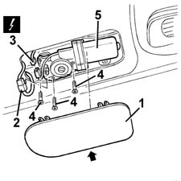

7030B72 sliding roof motor (1) front or rear - r r
- Path
- Procedures > 70 FITTINGS > 7030 SUN ROOF AND HOOD > 7030B sliding roof > 7030B72 sliding roof motor (1) front or rear - r r
- Kind
- repair procedure (removal / refitting; the operation number is the code)
- Applies to
- all engines; all production periods
- Interactive page
- https://sloeber94.github.io/elrnDB-fMltpl/en/#/2892153
Applies to: all engines; all production periods
 Removing
Removing
 Refitting
Refitting1. Release the motor access cover, working on the side shown by the arrow.
2. (For the rear motor only). Release the electrical connection for the sun roof control unit from the housing for the motor.
3. Disconnect the motor electrical connection
 | Name | Connector |
|---|---|---|
3 | Front sun roof motor |
| Name | Connector |
|---|---|---|
3 | Rear sun roof motor |
4. Unscrew the motor retaining bolt.
5. Remove the motor.

Applies to: all engines; all production periods
Refitting
RemovingCheck that the motor is undamaged.
Manually place the sun roof in the rear end of travel position and, in this position, fit the electric motor, fixing it with the bolts.
Connect the motor electrical connection.
(For the rear motor only). Fit the electrical connection for the sun roof control unit in the housing for the motor.
Fit the motor access cover.
Check the operation of the sunroof.